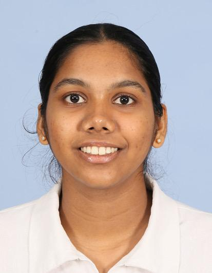

Hi. I'm Subhashi Rajakaruna.
My name is DSNDS Rajakaruna, and I am 20 years old. I am currently pursuing a Bachelor of Science (Honours) degree in Biotechnology at the Sri Lanka Institute of Information Technology (SLIIT). I have a strong interest in the field of biological sciences, particularly in microbiology. My ambition is to become a scientist specializing in microbiology, where I hope to contribute to scientific research and advancements that can benefit society. I am committed to developing my knowledge, practical skills, and research capabilities in order to achieve my professional goals and make a meaningful impact in the scientific community